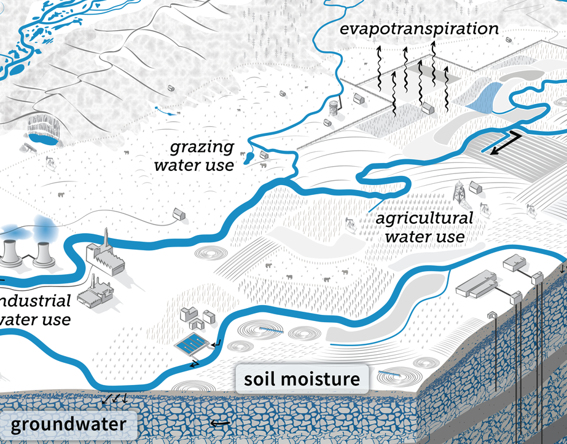
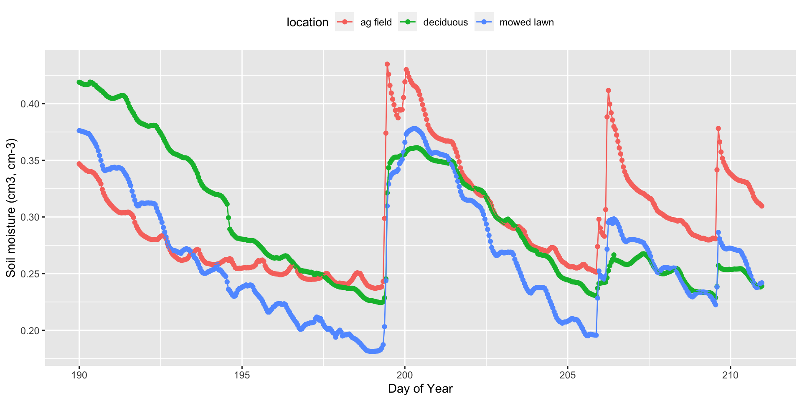

Chapter 8 Advanced data wrangling. Linking soil moisture with landcover and rainfall.
by Heather Kropp for ENVST 206: Introduction to Environmental Data Hamilton College
8.1 Learning objectives
- Parse dates and extract timestamp information
- Filter and summarize data using tidy data functions
- Join data tables
8.3 Soil moisture
Soil is a porous layer composed of small particles of organic and mineral materials. The air spaces (pores) in between these particles hold water, roots, microbes, and invertebrates. Soil moisture refers to the amount of water stored in the pores surrounding soil particles. Soil moisture is a major component of the terrestrial water cycle. The water at the surface of the soil evaporates or is taken up by plant roots for transpiration. The total loss of water through these processes is referred to as evapotranspiration, adding water vapor to the atmosphere.

source: USGS Data VizLabSoil moisture is essential for plant growth and survival. Too little soil moisture will limit photosynthesis as plants try to conserve water losses, reducing plant growth. Soil moisture also affects the activity of soil biota, affecting carbon and nutrient cycling in the soil. Excess soil moisture drains deeper into the ground resulting in recharge of deeper soil layers and ground water. Under saturated levels of soil moisture, all pores are filled with water. Until the excess water drains gravitationally, any additional rainfall will cause ponding at the surface or runoff. This can result in flooding.

8.3.1 Soil moisture in different types of land cover
The soil moisture at a given point in time depends on the temperature and dryness of the air, the amount of precipitation, the amount of water plants are using, soil type, and the amount of leaf area that can intercept precipitation before it makes it to the ground. Many agricultural operations use irrigation to maintain enough soil moisture to encourage greater levels of plant growth.
Flooding is a common issue around Clinton, NY. Mild droughts are also becoming more common in the northeastern United States under climate change, leading to plant stress, limitations in plant growth, and vulnerability to pests and disease. Soil moisture is the critical link between precipitation and conditions associated with flooding and plant stress.
Land cover describes the characteristics of the land surface and vegetative cover. Differences in leaf area and transpiration in different types of vegetative land cover can affect soil moisture. We’ll look at soil moisture data in the upper 12 cm of the soil collected in three different types of land cover on Hamilton’s campus: a fallow agricultural field (fallow corn field near Rogers estate), a deciduous leaf forest (beech-maple forest in Rogers glen), and a mowed lawn (turf grass near Ferguson Parking lot).
8.3.2 The data: soil moisture
The soil_moisture.csv file contains hourly soil moisture for each location.
location doy hour soil.moist
1 ag field 190 0 0.3469002
2 ag field 190 1 0.3456291
3 ag field 190 2 0.3443037
4 ag field 190 3 0.3434466
5 ag field 190 4 0.3423160
6 ag field 190 5 0.3412638The location column labels the type of land cover at the location of measurement. doy contains the day of year and hour is the hour in the day (0- 23) that the data was collected. The soil.moist column contains the volumetric soil moisture (cm 3 water cm -3 soil).
The campus.csv contains data from the campus weather station. You will use the na.strings argument to account formatting of the weather station data logger. Missing data is stored as #N/A rather than NA. The na.strings argument will convert these characters to NA in R.
#read in soil moisture data
weather <- read.csv("/cloud/project/activity07/campus.csv",
na.strings= "#N/A") Timestamps Solar.Rad.W.m2 Precipitation.mm wind.m.s
1 2022-05-31 19:00:00 122.4 0 0.64
2 2022-05-31 19:15:00 65.7 0 0.77
3 2022-05-31 19:30:00 47.1 0 0.58
4 2022-05-31 19:45:00 33.9 0 0.62
5 2022-05-31 20:00:00 21.1 0 0.57
6 2022-05-31 20:15:00 12.7 0 0.54
air.temp.c
1 27.8
2 27.2
3 26.7
4 25.9
5 25.0
6 24.2The weather data is collected every 15 minutes. The Timestamps columns contains the date and time information. Solar.Rad.W.m2 column contains the solar radiation (W m-2), Precipitation.mm contains the precipitation data. We will only look at data in the summer of 2022. During the summer, the only form of precipitation is rainfall (no hail or snow). wind.m.s contains the average wind speed (m s-1). air.temp.c is the air temperature (degrees C).
8.4 Working with dates
8.4.1 The lubridate package
Lubridate makes working with dates easier than base R. Let’s install and load the package:
https://github.com/rstudio/cheatsheets/blob/main/lubridate.pdf
8.4.2 Parsing date/time
In base R, you had to specify the date formatting with as.Date to convert the vector from characters to date. lubridate makes standardizing dates easier with the function that is named based on the order of your date formatting where y=year, m= month, d = day, h = hour, m=minute, s. The function works by combing the date and time elements that are in your date data. If both are in the same column then you separate the date and time letters with an underscore. You can set the timezone with the argument tz
exampleDate <- c("2021-01-10 05:23:30")
#parse date with year, month, day hour:minute:second
ymd_hms(exampleDate)[1] "2021-01-10 05:23:30 UTC"#parse date with timezone so that it is always in NY time
#will account for daylight savings. Time local to NY
ymd_hms(exampleDate, tz="America/New_York")[1] "2021-01-10 05:23:30 EST"#eastern standard time (note this doesn't work during daylight savings)
ymd_hms(exampleDate, tz="EST")[1] "2021-01-10 05:23:30 EST"You can reformat the date in a weather data Timestamps column:
8.4.3 Extracting information from dates
There are many functions in lubridate to extract information for dates. You can use the year function to extract just the year from the date. The only argument is the vector of dates:
You can get the day of year with yday:
You can also add the hour the measurement was taken
You will notice the soil moisture had the day of year and hour for information about the time/date. You now have this information for the campus weather. Note that there are four observations for every hour since the data is taken every hour.
8.5 Data wrangling with dplyr
The dplyr package contains a number of helpful functions for data wrangling.
You’ll want to compare the precipitation data to the soil moisture data. That will allow you to examine increases in soil moisture due to rainfall. Let’s sum up the total precipitation that occurred in the hour rather than using the individual 15 minute increments. We will want to apply to sum function to each unique doy and hour function. This means that we want to treat doy and hour as grouping variables. A group indicates that each unique value in the group describes a homogeneous feature (e.g. landcover, day of year). Use the group_by function to specify a grouping variable and sum the preciptation and count the number of observations:.
weatherHour <- weather %>% # start with weather
group_by(doy, hour) %>% # doy and hour are groups
summarise(precip.mm = sum(Precipitation.mm, na.rm=TRUE),# sum precipitation into a new column called precip.mm
n.precip = length(na.omit(Precipitation.mm)) ) # number of observations used to calculate precip.mm with NA omitted# A tibble: 6 × 4
# Groups: doy [2]
doy hour precip.mm n.precip
<dbl> <int> <dbl> <int>
1 151 19 0 4
2 151 20 0 4
3 151 21 0 4
4 151 22 0 4
5 151 23 0 4
6 152 0 0 4Note that you get a warning about the output. This is a standard warning to remind you that the default settings were used.
You’ll notice the output is a little different. Tidyverse contains a data structure called a tibble A tibble is a data frame that makes it easier to access the information associated with a data frame including any relevant groups (see doy and hour listed) and the type of data in each column.
8.5.1 Filtering data
You can use the filter function to subset data just like you did with the [] bracket notation. You use the same relational and logical statements covered in activity 2. Here’s a refresher:
Operator | Interpretation | Type
———|—————-|—–
== | equal to | relational
!= | not equal to | relational
> | more than (not including) | relational
>= | more than or equal to | relational
< | less than (not including) | relational
<= | less than or equal to | relational
& | and | logical
| | or | logical
Let’s remove any hours that don’t have all four observations present:
weatherData <- weatherHour %>% # refer to weatherHour data frame
filter(n.precip == 4) # only keep rows with exactly 4 observations in the hour
# rows in new data frame
nrow(weatherData)[1] 3358[1] 33658.5.2 Joining data tables
Your goal is to compare the precipitation and soil moisture data. It is clear there are slightly different time periods in each data frame. It would be helpful to match the data frames into a single data frame so that each row contains the same day of year and hour of observation. A join combines two tables based on one or more columns that contain the same identifying variables. We refer to the two tables as a left (table listed first) and the right table (second table). There are four different types of joins.
Let’s explore the types of joins by combining the soil moisture and precipitation observations.
A left join preserves the structure of the left table (left_join. Any data present in the left table are kept. Columns from the right table are matched to the identifying columns in the left table. Any data present in the left table, but not in the right table results in missing data in the new columns. Data are present in the right table but not in the left are not added in the join. The right join follows the same rules (right_join), preserving the structure of the right table.
You can do a join with soil moisture as the left table and the hourly precipitation weather data as the right table. Each function is named by the type of join.
soilLeftJoin <- left_join(soil, # left table
weatherData, # right table
by=c("doy","hour")) #identifier columns[1] "number of rows:"[1] 1512 location doy hour soil.moist precip.mm n.precip
1 ag field 190 0 0.3469002 0 4
2 ag field 190 1 0.3456291 0 4
3 ag field 190 2 0.3443037 0 4
4 ag field 190 3 0.3434466 0 4
5 ag field 190 4 0.3423160 0 4
6 ag field 190 5 0.3412638 0 4soilRightJoin <- right_join(soil, # left table
weatherData, # right table
by=c("doy","hour")) #identifier columns[1] "number of rows:"[1] 4366 location doy hour soil.moist precip.mm n.precip
1 ag field 190 0 0.3469002 0 4
2 ag field 190 1 0.3456291 0 4
3 ag field 190 2 0.3443037 0 4
4 ag field 190 3 0.3434466 0 4
5 ag field 190 4 0.3423160 0 4
6 ag field 190 5 0.3412638 0 4A full join keeps all observations in the join. If data are present in one table, but not the other, missing values are added.
soilFullJoin <- full_join(soil, # left table
weatherData, # right table
by=c("doy","hour")) #identifier columns[1] "number of rows:"[1] 4366 location doy hour soil.moist precip.mm n.precip
1 ag field 190 0 0.3469002 0 4
2 ag field 190 1 0.3456291 0 4
3 ag field 190 2 0.3443037 0 4
4 ag field 190 3 0.3434466 0 4
5 ag field 190 4 0.3423160 0 4
6 ag field 190 5 0.3412638 0 4A inner join only keeps observations present in both tables.
soilInnerJoin <- inner_join(soil, # left table
weatherData, # right table
by=c("doy","hour")) #identifier columns[1] "number of rows:"[1] 1512 location doy hour soil.moist precip.mm n.precip
1 ag field 190 0 0.3469002 0 4
2 ag field 190 1 0.3456291 0 4
3 ag field 190 2 0.3443037 0 4
4 ag field 190 3 0.3434466 0 4
5 ag field 190 4 0.3423160 0 4
6 ag field 190 5 0.3412638 0 48.6 Conclusions
You can now look at the data side by side. Let’s combine everything we have learned and look at the soil moisture on the hour with the most precipitation. For example, you can compare soil moisture at the hour with the most precipitation.
# soil moisture on the day and hour with the most precipitation:
maxSoil <- soilInnerJoin %>% # use joind data
filter(precip.mm == max(precip.mm)) # look at hour and day with the highest precipitation
maxSoil location doy hour soil.moist precip.mm n.precip
1 ag field 199 11 0.4348943 6.221 4
2 deciduous 199 11 0.3212613 6.221 4
3 mowed lawn 199 11 0.3097192 6.221 4You can also look at a time series of each data value:
#calculate a decimal doy for plotting
soilInnerJoin$TIME = soilInnerJoin$doy+(soilInnerJoin$hour/24)
ggplot(soilInnerJoin, aes(x=TIME, y=soil.moist, color=location))+
geom_point()+
geom_line()+
theme(legend.position="top")+
labs(x="Day of Year", y="Soil moisture (cm3, cm-3)")
ggplot(soilInnerJoin, aes(x=TIME, y=precip.mm))+
geom_col()+
labs(x="Day of Year", y="Rainfall (mm)")You can see that the fallow agricultural field and mowed lawn have the greatest increases in soil moisture after rainfall. The mowed lawn also has the greatest dry down in between rainfall events. Using these data wrangling skills, you will continue to explore patterns in soil moisture in activity 7.
8.7 Citations
Water Cycle Diagram. 2022. USGS Data VizLab. https://www.usgs.gov/special-topics/water-science-school/science/water-cycle-diagrams